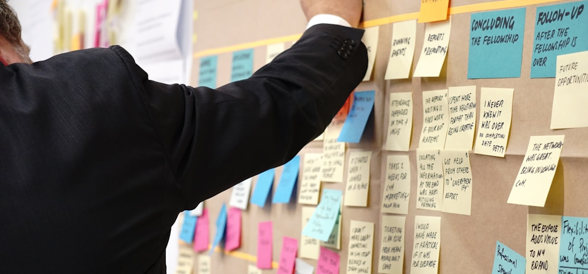

KI in der Industrie › vom Shopfloor her gedacht.
Industrielle KI gelingt selten am Algorithmus allein — sie gelingt an zusammenpassenden Maschinendaten, an Piloten nah an der Linie und an Lösungen, die der Schichtbetrieb annimmt. Wir beraten vom Shopfloor her: reale Produktionsdaten, Anwendungsfälle mit messbarem Nutzen, Einführung im laufenden Betrieb — gemeinsam mit Ihren Leuten.
Drei Gründe, warum industrielle KI-Piloten als Demo auf der Teststufe stehen bleiben.
Zwischen Messe-Demo und Serienbetrieb liegt der Alltag einer Produktion: Takt, Schichten, Wartungsfenster, gewachsene Anlagen. Dort entscheidet sich, ob das Modell im Regelbetrieb zuverlässig arbeitet.
Maschinendaten passen über OT und IT nicht zusammen
Maschinensteuerungen, Sensorik, MES und ERP nutzen verschiedene Bezeichnungen und Zeitstempel, die voneinander abweichen. Erst eine geordnete Datengrundlage macht aus dem Modell mehr als einen Laborversuch — die Anbindung ist der größte Arbeitsanteil im Projekt. Wer diesen Teil unterschätzt, kauft Modelle für Daten, die im Werk selten in dieser Qualität vorliegen.
Der Pilot läuft getrennt vom Linienbetrieb
Der Prototyp überzeugt auf historischen Daten — geklärt ist aber nicht, wie er im Takt eingreift, wer bei Alarm entscheidet und was bei Fehlalarm passiert. So bleibt der Pilot im Testraum, während die Linie unverändert weiterläuft. Die Frage „Wer macht was bei Alarm?" klingt banal — und entscheidet über Serientauglichkeit.
Die Lösung wird an der Schicht vorbei geplant
Wenn Instandhalter und Bediener das System als Kontrolle erleben, sinkt die Nutzung, bis das System ungenutzt bleibt: Hinweise werden ignoriert, Eingaben unterbleiben, die Qualität der Daten sinkt. Akzeptanz ist in der Produktion eine Funktionsbedingung: Die besten Trainingsdaten der Zukunft kommen aus den Rückmeldungen von Instandhaltern und Bedienern.
Was wir für Industrieunternehmen konkret leisten.
Vier Bausteine zwischen Shopfloor und Systemlandschaft — einzeln beauftragbar, in Summe der Weg von der Idee zum verlässlichen Serieneinsatz.
Use-Case-Funnel Produktion
Wir sichten mit Produktion, Qualität und Instandhaltung die Kandidaten — von Ausschussreduktion bis Energieoptimierung — und bewerten je Fall Nutzen, Datenlage, Eingriffstiefe und Risiko. Übrig bleibt eine kurze Liste mit belastbarer Rechnung je Fall — inklusive der Fälle, die wir bewusst zurückstellen, mit dem Grund dazu.
Daten- & Anbindungskonzept
Welche Signale, aus welchen Quellen, in welcher Qualität? Wir definieren die minimale Datenstrecke je Anwendungsfall — OT-seitig wie IT-seitig — und klären Integration, Speicherung und Zugriff, bevor Modelle versprochen werden. Diese Reihenfolge schützt vor dem teuersten Industrie-Irrtum: Infrastruktur kaufen und dann nach dem Nutzen suchen.
Pilot an der Linie
Der Pilot läuft im realen Takt mit: Schwellenwerte, Alarmwege, Rückmeldeschleifen mit Bedienern und Instandhaltern. Gemessen werden Treffer, Fehlalarme und der echte Effekt auf Qualität, Verfügbarkeit oder Durchlaufzeit. Die Schicht sieht dieselben Zahlen wie das Management — Vertrauen entsteht durch geteilte Wahrheit.
Betrieb, Schulung & Verantwortung
Monitoring, Eskalationswege, Modellpflege und geschulte Verantwortliche in Produktion und IT: Der Einsatz wird so übergeben, dass er Schichtwechsel, Urlaubszeiten und Anlagenänderungen übersteht. Erst dann sprechen wir von Serienbetrieb — Sichtung, Pilot und Anbindung davor bleiben ein verlängerter Versuch.
- Anwendungsfälle gemeinsam mit Linie, Qualität und Instandhaltung ausgewählt
- Minimale Datenstrecke je Fall als schlanker Einstieg vor jeder Plattform
- Fehlalarm-Quote als harte Messgröße von Tag eins
- Übergabe mit Betriebsmodell — jede Lösung mit benanntem Besitzer

Fünf Schritte von der Linie bis zum Serieneinsatz.
Industrietauglich heißt: kleine Eingriffe, klare Verantwortung, belegte Wirkung. Genau so ist der Pfad geschnitten.
Shopfloor-Sichtung
Begehung vor Ort: Wo entstehen Ausschuss, Stillstände, Suchzeiten? Welche Daten existieren an Maschine, MES und ERP wirklich?
Fall & Datenstrecke schärfen
Für den Spitzenkandidaten: Zielgröße, Eingriffslogik, benötigte Signale, Datenqualität. Plus die Festlegung, wer bei Alarm entscheidet.
Anbindung & Modellaufbau
Die definierte Datenstrecke wird gebaut, das Modell auf Ihren realen Daten entwickelt und gegen historische Fälle geprüft.
Pilot im Takt
Mitlaufen an der Linie, erst beratend, dann eingreifend — mit Rückmeldeschleife zu Bedienern und Instandhaltung und sauberer Messung aller Effekte.
Serienbetrieb & Übergabe
Monitoring, Pflegeprozess, Schulung, Verantwortliche: Der Einsatz geht in den Regelbetrieb über und bleibt auch bei Produkt- und Anlagenwechseln stabil.

Wo KI in der Produktion zuerst Geld verdient.
Die wirtschaftlichsten Fälle liegen dort, wo täglich Ausschuss, Stillstand oder Suchaufwand entsteht.
Prüfung & Ausschussreduktion
Automatische Sichtprüfung und Mustererkennung in Prozessdaten finden Fehler früher und gleichmäßiger als der ermüdbare Blick — Grenzfälle entscheidet weiterhin der Mensch, dokumentiert und nachvollziehbar.
Instandhaltung mit Vorlauf
Anomalien in Schwingungen, Strömen und Temperaturen kündigen Verschleiß an, bevor er zum Stillstand wird. Aus reaktiver Feuerwehr wird planbare Instandhaltung in den Wartungsfenstern.
Prognose für Last & Material
Auslastungs- und Bedarfs-Prognosen aus Auftrags- und Maschinendaten beruhigen Feinplanung und Disposition — weniger Eilaufträge, weniger Sicherheitspuffer, bessere Termintreue. Die Prognose stärkt die Disposition — sie gibt den Disponenten den planerischen Vorlauf zurück, den das Tagesgeschäft sonst aufzehrt.
Störungs- & Anlagenwissen abrufbar
Wartungshistorie, Handbücher und Störungsberichte werden befragbar: Die nächste Schicht findet in Sekunden, was der Kollege vor zwei Jahren gelöst hat — Wissen bleibt dauerhaft im Haus verfügbar.

Standards und Regeln für industrielle KI.
Industrie heißt Normen, Sicherheit und Nachweisbarkeit — wir bauen den KI-Einsatz von Anfang an darauf auf.
OT-Sicherheit zuerst
Eingriffe in Maschinennähe folgen den Sicherheitsregeln der Automatisierung: rückwirkungsfreie Datenabnahme, klare Trennung von Empfehlung und Steuerung, definierte Not-Aus-Logik der Empfehlungen.
Datenqualität als Prozess
Sensorik driftet, Anlagen ändern sich: Datenqualität wird laufend geprüft und gesichert — mit Verantwortlichen und Schwellen, die Alarm schlagen.
EU AI Act & Produkthaftung
Risikoeinstufung je Anwendung und saubere Dokumentation der Entscheidungslogik — Orientierung geben u. a. BSI-Veröffentlichungen; rechtliche Bewertung erfolgt mit Ihren Fachleuten.
DSGVO im Werk
Wo Personenbezug entsteht — Schichtdaten, Bediener-Eingaben — gelten Zweckbindung und Löschkonzepte; Hinweise liefert der BfDI. Wir gestalten Fälle, wo möglich, personenfrei.
Mensch entscheidet im Zweifel
Empfehlungssysteme bleiben Empfehlungssysteme, bis Verlässlichkeit über lange Zeiträume belegt ist — und auch dann behalten definierte Rollen das letzte Wort bei kritischen Eingriffen.

Für gewachsene Werke mit realem Anlagenbestand.
Alte und neue Anlagen nebeneinander, mehrere Standorte, knappe Instandhaltungs-Kapazität: Damit arbeiten wir — täglich.
- Funktioniert mit Bestandsanlagen: Nachrüst-Sensorik nur, wo sie sich rechnet
- Ein Standort, eine Linie zuerst — Ausweitung nach belegtem Effekt
- Instandhaltung und Bediener als aktive Mitgestalter eingebunden
- IT und OT an einem Tisch — wir übersetzen in beide Richtungen
Drei Unterschiede zu Plattform-Versprechen.
Industrielle KI braucht weniger Magie und mehr Handwerk. Unseres sieht so aus:
Wir rechnen in Ausschuss und Stillstand
Nutzen wird in Ihren Größen belegt — Ausschussquote, Verfügbarkeit, Durchlaufzeit — in der Sprache, die der Lagebericht versteht.
Wir senken die Fehlalarm-Quote als zentrales Designziel
Ein System, das mehrfach falsch warnt, verliert das Vertrauen der Schicht: Bediener ignorieren dann auch die richtigen Warnungen. Deshalb ist die Fehlalarm-Quote bei uns ein zentrales Designkriterium.
Wir empfehlen anbieterunabhängig nach Ihrem Fall
Ob Plattform, Einzelmodell oder Bordmittel des MES: Wir empfehlen, was Ihr Fall braucht, und legen die Kostenrechnung offen — inklusive Pflegeaufwand nach Jahr eins.

Zusagen, die in der Produktion zählen.
Verbindlichkeit heißt hier: Planbarkeit für Linie, Qualität und Instandhaltung.
Eingriffe erst nach Freigabe
Jede Stufe — von beratend zu eingreifend — wird mit Produktion und Sicherheit gemeinsam freigegeben und dokumentiert. Tempo entsteht durch Vertrauen und verlässliche Abläufe.
Messung gegen Basislinie
Vor dem Pilot wird die Ausgangslage sauber erfasst; berichtet wird der echte Delta-Effekt — auch wenn er kleiner ausfällt als erhofft. Nur so bleiben Folgeentscheidungen gesund.
Dokumentation, die Schichten überlebt
Entscheidungslogik, Grenzwerte, Zuständigkeiten und Pflegeprozesse sind so dokumentiert, dass neue Kollegen sie verstehen — Audit-tauglich inklusive.

Fragen aus Produktion, Qualität und Instandhaltung.
Die häufigsten Fragen vor industriellen KI-Vorhaben — direkt beantwortet.
Wo fängt KI in der Produktion sinnvoll an?
Unsere Maschinendaten sind unvollständig — geht es trotzdem?
Warum scheitern industrielle KI-Piloten so häufig?
Brauchen wir erst eine Datenplattform oder Industrie-4.0-Strategie?
Wie gehen Sie mit Arbeitssicherheit und Maschinenrichtlinien um?
Ersetzt KI unsere Facharbeiter und Instandhalter?
Was kostet ein industrieller KI-Einstieg?
Wie lange dauert es bis zur sichtbaren Wirkung an der Linie?
Wie kommt der Pilot in den Serienbetrieb?
Welche Anwendungsfälle rechnen sich erfahrungsgemäß zuerst?
Wie stellen wir Datenschutz bei Schicht- und Bedienerdaten sicher?
Mehrere Standorte — wo starten und wie ausrollen?
Wie arbeiten KI-Hinweise mit unserem MES und der Feinplanung zusammen?
Was passiert mit dem Modell, wenn der Anbieter wechselt oder ausfällt?
Wie bleibt das Modell bei Produkt- und Anlagenwechseln stabil?
Bringen Sie KI an die Linie und in den Serienbetrieb.
Der erste Schritt ist ein Erstgespräch von 30–45 Minuten. Wir klären Ihre Ausgangslage, die wichtigsten Engpässe und ob CX der richtige Partner ist. Wenn nicht, verweisen wir auf jemanden, der besser passt.
Erstgespräch anfragen →Ein Produktions-Use-Case, der auf Folien glänzte und an der Fehlalarm-Quote scheiterte.
Ein Mandat, in dem die Datenstrecke wichtiger wurde als das Modell.
Ein konkreter Serieneffekt aus einem laufenden Industrie-Mandat.
Ein reales Industrie-Mandat: Tagessatz, Pilotdauer, Anbindungsaufwand.
Welche deutsche Markt- oder Regulierungsrealität hat den Einsatz geprägt?
Geführt von Johannes & Hannes — persönlich, von erfahrenen Beratern.
Beide haben über Jahre große Transformationsprojekte verantwortet, bevor sie CX-Experts gegründet haben. Sie führen jedes Mandat persönlich — von erfahrenen Beratern mit direkter Verantwortung.
- Erfahrene Berater — jedes Mandat persönlich geführt
- Branchenübergreifend · vom Mittelstand bis zum Konzern
- Strukturiertes Vorgehen · nachvollziehbar und dokumentiert
- DACH-weit tätig